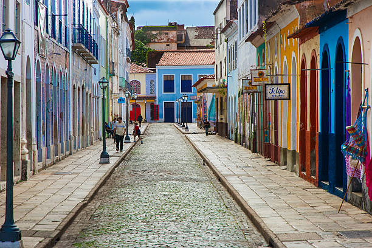
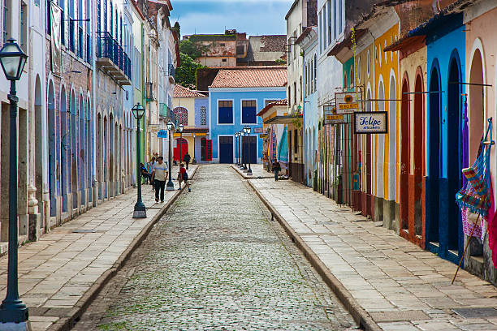
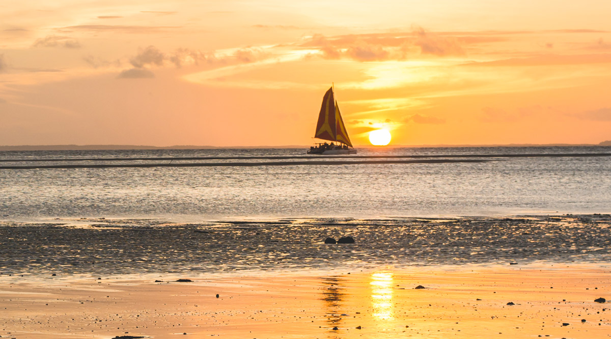
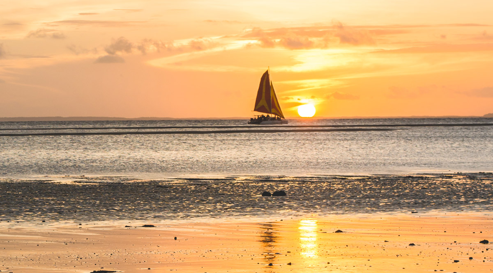

Aqui vamos te mostrar os melhores lugares para aproveitar suas ferias com aquele clima quente e ensolarado
São Luís do Maranhão é o destino ideal para quem busca uma experiência completa no Nordeste brasileiro. Com suas ruas históricas, praias paradisíacas e rica vida cultural, a cidade encanta visitantes de todas as partes do mundo. Explore os encantos do centro histórico, com suas casas coloniais e igrejas seculares, e mergulhe nas águas cristalinas das praias de Ponta d'Areia e Calhau. Não deixe de provar a deliciosa culinária maranhense, repleta de sabores únicos e influências culturais diversas. Em termos de custos, São Luís oferece uma variedade de opções para todos os orçamentos. Em média, o gasto diário para alimentação, transporte e atividades turísticas fica em torno de R$ 150 a R$ 250 por pessoa. Já as opções de hospedagem variam desde hostels econômicos até hotéis de luxo, com diárias que podem partir de R$ 100 e chegar a R$ 500, dependendo do padrão de conforto e localização desejados. Então, se você está em busca de uma viagem memorável no Nordeste, São Luís do Maranhão é o destino perfeito para explorar. Venha desfrutar de tudo o que essa cidade encantadora tem a oferecer e viva momentos inesquecíveis em meio a paisagens deslumbrantes e cultura vibrante!
E essas são algumas das paisagens que vocês irão encontrar neste lugar maravilhoso

 
 
